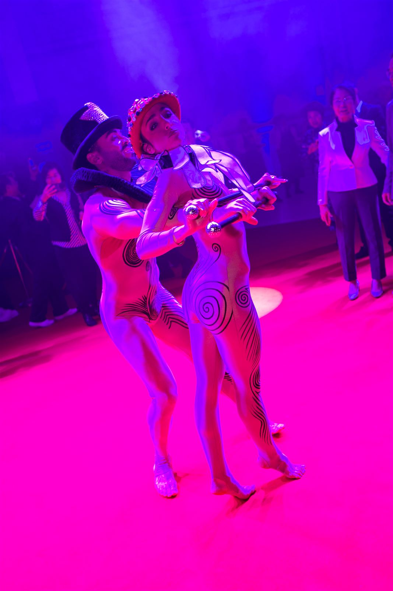
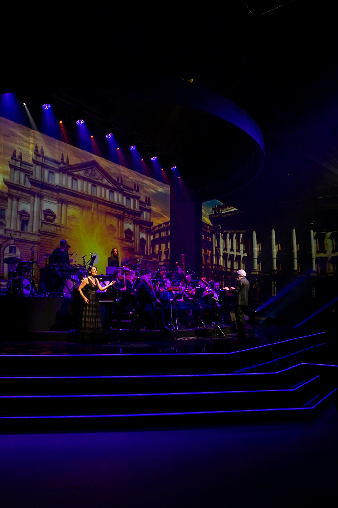
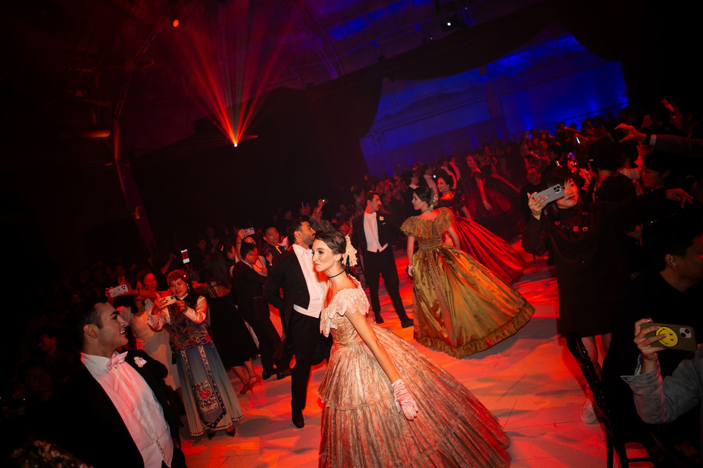
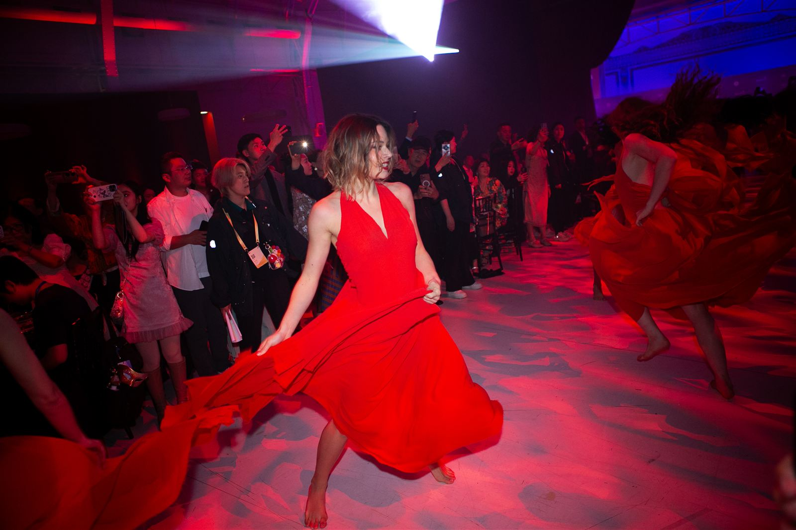
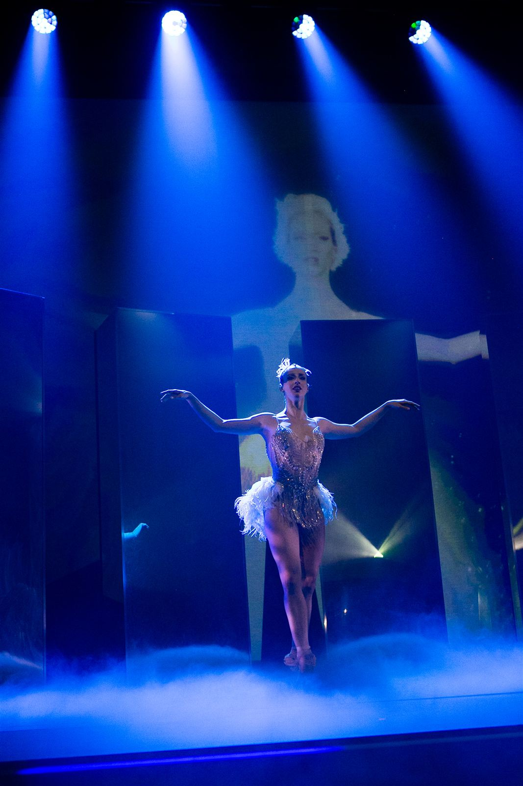
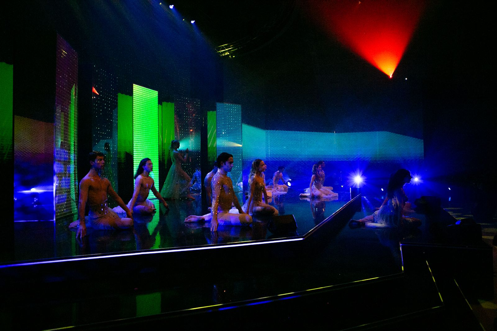
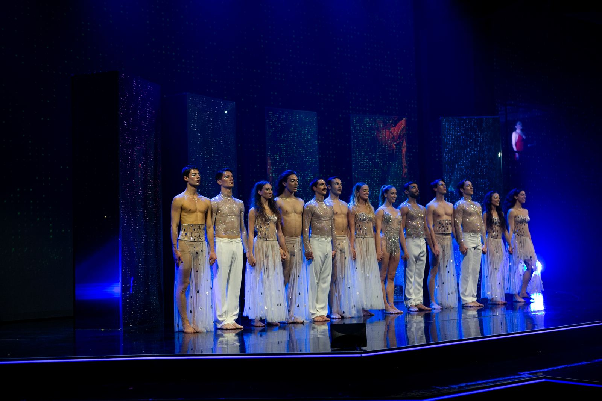

"Meraviglioso" was an extraordinary gala crafted exclusively for Amway China, seamlessly blending the elegance and artistic brilliance of Italian culture. Hosted at the prestigious Palazzo del Ghiaccio, the event mesmerized 800 guests with an unforgettable evening celebrating the achievements of Amway China's top sales force.
Under the artistic direction of Cristian Taraborrelli, the gala embodied the essence of Made in Italy through a breathtaking fusion of fashion, music, and theatre. Captivating performances by étoile Virna Toppi and a symphonic orchestra conducted by Maestro Beppe Vessicchio transformed the night into a symphony of Italian elegance, innovation, and pure emotion.
“Meraviglioso” è stato un gala straordinario creato esclusivamente per Amway China, fondendo con naturalezza l'eleganza e la brillantezza artistica della cultura italiana. Ospitato nel prestigioso Palazzo del Ghiaccio, l'evento ha incantato 800 ospiti con una serata indimenticabile che celebrava i successi della forza vendita di Amway China.
Sotto la direzione artistica di Cristian Taraborrelli, il gala ha incarnato l'essenza del Made in Italy attraverso una straordinaria fusione di moda, musica e teatro. Le esibizioni dell'étoile Virna Toppi e dell'orchestra sinfonica diretta dal Maestro Beppe Vessicchio hanno trasformato la serata in una sinfonia di eleganza, innovazione e pura emozione italiana.
«Meraviglioso» était un gala extraordinaire créé exclusivement pour Amway China, mêlant avec naturel l'élégance et le génie artistique de la culture italienne. Organisé au prestigieux Palazzo del Ghiaccio, l'événement a émerveillé 800 invités lors d'une soirée inoubliable célébrant les succès de la force de vente d'Amway China.
Sous la direction artistique de Cristian Taraborrelli, le gala a incarné l'essence du Made in Italy à travers une fusion spectaculaire de mode, musique et théâtre. Les performances de l'étoile Virna Toppi et de l'orchestre symphonique dirigé par le Maestro Beppe Vessicchio ont transformé la soirée en une symphonie d'élégance, d'innovation et de pure émotion italienne.
Artistic Concept · Created by Cristian Taraborrelli
"Meraviglioso" tells a captivating story of Italian heritage through a theatrical opera that combines the beauty of fashion, the emotion of music, and the drama of theatre — a tribute to Italy's cultural magnificence expressed in three interpretations of Made in Italy beauty: fashion, music, and theatre aesthetics.
Creative Team
Artists
Conductor
Beppe Vessicchio
Prima Ballerina
Virna Toppi
Tenor
Piero Mazzocchetti
Soprano
Giacinta Nicotra
Music Ensemble
Kamaak Music
Violinist
Stella Manfredi
Quartet
Incanto Quartet
Press
"Under the artistic direction of Cristian Taraborrelli, the evening was a tribute to the magnificence of Italian cultural heritage."
ADC Group · e20express
Read article ↗"Meraviglioso is the perfect example of how the alchemy between client objectives and the creative idea of the agency can create a unique experiential product."
Umberto Cicognini, Creative Director
Gallery








Tags